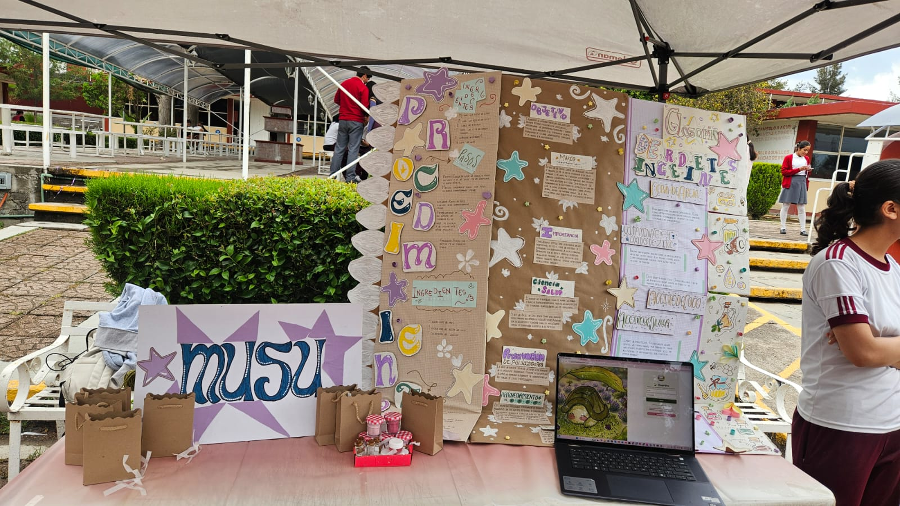
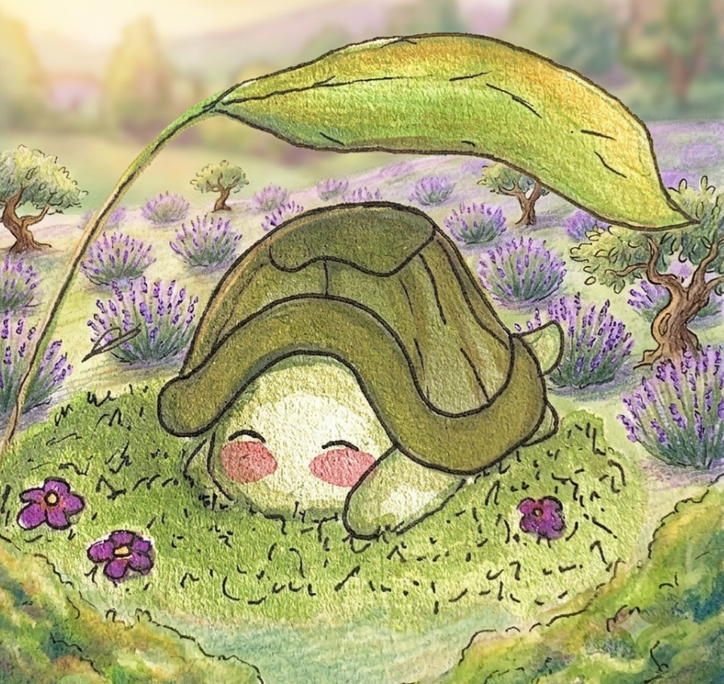

Presentación del Proyecto
Musu es un proyecto de cuidado personal creado con el propósito de ofrecer productos naturales para la hidratación y el bienestar de la piel y los labios. Nuestro proyecto está compuesto por un bálsamo labial hidratante, un exfoliante labial y un aceite para manos, codos y rodillas, elaborados con ingredientes naturales como miel, aceite de coco, aceite de almendras, aceite de oliva y vitamina E.
El objetivo de Musu es brindar una alternativa accesible y práctica para el cuidado personal, ayudando a mantener la piel suave e hidratada y los labios saludables. A través de la elaboración de estos productos, buscamos promover el uso de ingredientes naturales y demostrar que es posible crear productos de calidad de forma sencilla y económica. Además, nuestro proyecto fomenta hábitos de cuidado personal que contribuyen a una mejor imagen y bienestar.
Resultados
Cuando presentamos nuestro proyecto, nos dimos cuenta de que algunas personas no entendían completamente la finalidad de nuestros productos al verlos por primera vez. Por eso, decidimos explicar más a fondo en qué consistían, cuáles eran sus ingredientes and los beneficios que aportaban para el cuidado de la piel y los labios. Les comentamos que el objetivo principal era ayudar a mantener la piel hidratada y los labios suaves y saludables, contribuyendo a una mejor apariencia y a una sonrisa más cuidada.
Conforme fuimos explicando el proceso de elaboración y las ventajas de utilizar ingredientes naturales, las personas comenzaron a mostrar más interés en el proyecto. También les llamó la atención que los productos fueran fáciles de elaborar y que estuvieran hechos con ingredientes accesibles. Al final de la presentación, la mayoría comprendió mejor nuestra propuesta y expresó comentarios positivos sobre los productos. Muchas personas mencionaron que les gustó la idea, la presentación y los beneficios que ofrecen para el cuidado personal, por lo que consideramos que nuestro proyecto tuvo una buena aceptación.
Procesos de Elaboración
Elaboración del aceite para manos, codos y rodillas
Primero mezclamos las 12 cucharadas de aceite de almendras con las 6½ cucharadas de aceite de oliva. Después agregamos el contenido de las 10 cápsulas de vitamina E y revolvimos bien hasta obtener una mezcla uniforme. Finalmente, colocamos el aceite en un frasco limpio para su uso.
Elaboración del bálsamo hidratante
Comenzamos colocando la cera de abeja, el aceite de coco y el aceite de oliva en un recipiente resistente al calor. Después derretimos los ingredientes a baño María mientras mezclábamos suavemente. Cuando la mezcla estuvo completamente líquida, la retiramos del fuego y agregamos la vitamina E, la miel y la esencia. Revolvimos rápidamente y vertimos la mezcla en un frasco limpio para que se enfriara.
Elaboración del exfoliante labial
Mezclamos la miel, el aceite de coco y el azúcar en un recipiente pequeño. Revolvimos todos los ingredientes hasta obtener una pasta uniforme. Finalmente, el exfoliante quedó listo para su aplicación en los labios.



💋 Ver Nuestro Bálsamo